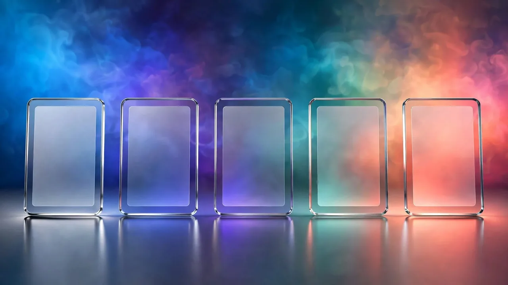

CSS Box Shadow Explained: Adding Depth and Elevation
What each box-shadow value does, how shadows create a sense of depth, and how to make them look natural.
By 123MiniApps · Published 2026-07-30 · Updated 2026-10-03 · 1133 words · about 5 minute read
A box shadow is the soft (or sharp) shadow cast behind an element, and in web design it does far more than decoration, it creates a sense of depth, signalling that a card, button or menu sits above the surface beneath it. CSS gives you precise control over shadows through a handful of values, and understanding them is the difference between shadows that look natural and ones that look wrong. The Box Shadow Generator lets you build one visually and copy the CSS, and this article explains how box shadows work.
Shadows are one of the main ways interfaces communicate hierarchy and interactivity. A raised button invites a click; a floating card stands out from the page; a dropdown clearly hovers above content. All of this is conveyed through shadow.
The values that define a shadow
A CSS box shadow is built from several values, each controlling one aspect:

- Horizontal offset: how far the shadow shifts left or right.
- Vertical offset: how far it shifts up or down; positive values drop the shadow below, as if lit from above.
- Blur radius: how soft or sharp the shadow is; higher blur means a softer, more diffuse shadow.
- Spread radius: how much the shadow expands or contracts beyond the element's size.
- Color: usually a semi-transparent black, so the shadow tints rather than blocks what is behind it.
- Inset: an optional keyword that puts the shadow inside the element, for a pressed or recessed look.
Combining these gives you complete control over the shadow's position, softness, size and tone.
How shadows create depth
The reason shadows convey elevation is that they mimic how light and shadow work in the real world. An object raised above a surface casts a shadow below and slightly offset from it, and the higher it is, the larger and softer that shadow becomes. Interfaces borrow this directly: a small, tight shadow suggests an element sitting just above the surface, while a large, soft, spread-out shadow suggests it floating well above. By varying shadow size and softness, you create a consistent sense of layers, which elements are close to the page and which hover above it, that users read instantly and unconsciously.
The most natural shadows are soft and low-contrast, a gentle, blurred, semi-transparent shadow. Hard, dark, sharply-offset shadows look artificial because real diffused light rarely produces them. When in doubt, increase the blur and reduce the opacity.
Making shadows look natural
A few principles keep shadows convincing. Keep the light direction consistent across your whole design, if one element's shadow falls below and to the right, they all should, as though lit from the same source. Use a mostly-downward vertical offset, since interfaces conventionally imply light from above. Favour soft blur and low opacity over hard dark shadows. And match the shadow to the element's role: a subtle shadow for a resting card, a larger one when it is lifted on hover, reinforcing interactivity. Layering two or more shadows, a tight one plus a softer, larger one, can produce especially realistic depth, mimicking how real shadows have both a sharp near-edge and a diffuse penumbra.
Shadows and rounded corners
Shadows rarely appear alone; they work together with other surface properties, especially rounded corners. A card typically has both a border radius softening its corners and a box shadow lifting it off the page, and the two combine to make it feel like a physical, tactile object. The shadow follows the rounded shape automatically, so the effect stays consistent. Getting both right, gentle rounding and a soft shadow, is much of what makes modern card-based interfaces feel polished.
Build CSS box shadows visually, offset, blur, spread, color and inset, and copy the code, entirely in your browser.
Shadows in modern UI effects
Box shadows are a building block for several popular design styles. They are central to material-style interfaces built around layered, elevated surfaces, and they combine with blur and transparency in the frosted-glass look that a glassmorphism generator produces. Paired with gradients and rounded corners, shadows help create rich, dimensional surfaces from flat CSS. Building one visually and copying the generated code is far easier than hand-tuning the numbers, especially for layered shadows.
Layering shadows for realistic depth
The single most effective technique for shadows that look genuinely three-dimensional is to use more than one at a time. Real objects do not cast a single uniform shadow; they cast a tight, darker shadow close to where they meet the surface and a larger, softer, fainter shadow spreading further out. You can reproduce this in CSS by stacking two or more shadows on the same element, a small, slightly darker one with little blur for the contact edge, plus a larger, lighter, heavily blurred one for the ambient spread. The combination reads as far more natural than any single shadow, however carefully tuned.
This layered approach is the secret behind the elevation systems used in polished design languages, where each 'height' level is defined by a specific recipe of stacked shadows. A card resting just off the page uses a subtle two-layer shadow; a modal floating well above everything uses a deeper, more diffuse stack. Because the layers scale together, moving an element 'higher', on hover, say, is a matter of swapping to a taller shadow recipe, and the transition feels like the object genuinely lifting. The other quiet detail that sells realism is colour: pure black shadows can look heavy and muddy, so tinting the shadow slightly toward the background colour, or using a colour derived from the element itself, often reads as more natural. Master the layered, softly-tinted shadow and you have the core technique behind almost every interface that feels tactile and dimensional rather than flat.
In summary, a CSS box shadow is defined by horizontal and vertical offset, blur, spread, color and an optional inset, and together these let you place an element convincingly above the surface. Shadows create depth by imitating real light, so keep the light direction consistent, favour soft and subtle over hard and dark, drop the shadow downward, and vary its size to signal how elevated something is. Combined with rounded corners and used consistently, well-crafted shadows are one of the simplest ways to make an interface feel layered, tactile and professional.